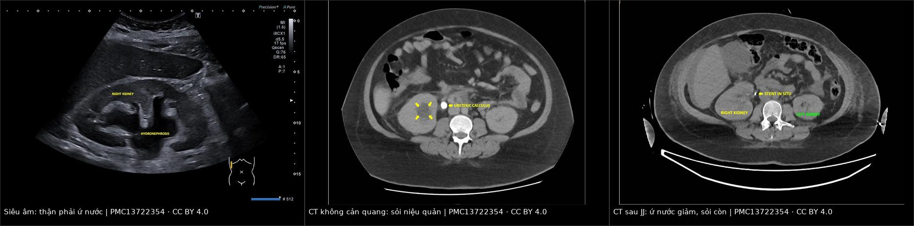
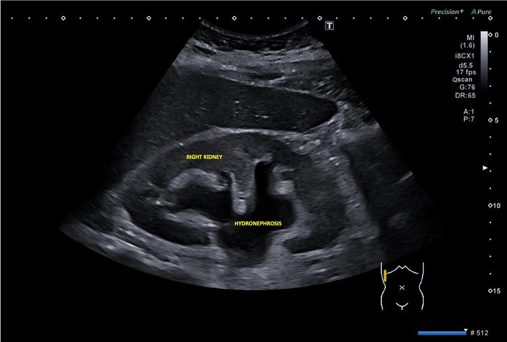
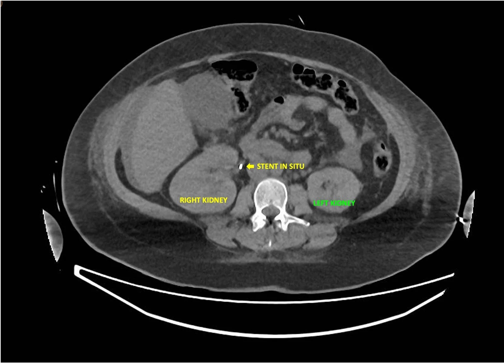
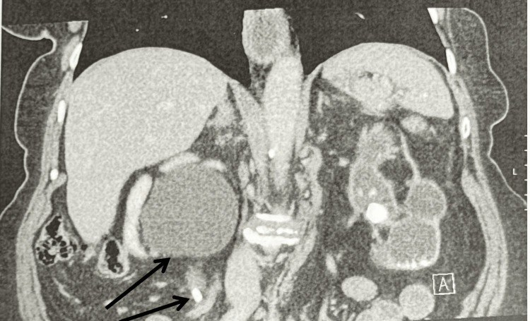

1922 — Sỏi niệu ở bà mẹ sau sinh đang cho con bú: đỉnh nguy cơ 0–3 tháng, 25% còn sỏi sau thai, chọn ESWL/URS và thuốc an toàn với sữa mẹ / Postpartum nephrolithiasis in breastfeeding mothers
Tags: pattern:soi-nieu pattern:u-nuoc pattern:tac-nghen vung:than vung:nieu-quan vung:thai-nhi protocol:sieu-am-bung protocol:CT-lieu-thap score:EAU-2025
Mức chắc chắn (certainty): tổng hợp y văn (literature synthesis) — ghép nghiên cứu bệnh–chứng 945 ca/1.890 chứng về nguy cơ sỏi theo tam cá nguyệt và sau sinh (Thongprayoon 2021, Am J Kidney Dis, PMID 33867205), đoàn hệ 120 thai phụ sỏi niệu quản 14 năm (PMC13668503), đoàn hệ 208 thai (PMC11895682), tổng quan ứ nước thai (PMC11210578), ca lâm sàng có ảnh (PMC13722354, PMC13298540), khung quyết định ngưng cho bú theo nguy cơ (PMC13706221), ca gây mê – cho bú (PMC13157709), tổng quan codeine qua sữa (PMC13519785), hướng dẫn chuyển hóa sỏi Brazil 2025 (PMC11913452), nghiên cứu ESWL/URS (PMC12813581, PMC12662765) và dữ liệu kích thước sỏi – tự ra đã dùng ở bài 1818 (PMC10487296). Số nào nguồn không nêu ghi "chưa rõ".
Câu chốt: nguy cơ sỏi đạt đỉnh sau sinh chứ không phải trong thai: so với phụ nữ không mang thai, OR 0,92 ở tam cá nguyệt I → 2,00 ở quý II → 2,69 ở quý III → 3,53 ở 0–3 tháng sau sinh, rồi về mức nền sau 1 năm (PMID 33867205). Trong 120 thai phụ sỏi niệu quản, 75% sỏi tự ra nhưng 25% (30/120) còn sỏi sau khi kết thúc thai — 8 ca ESWL, 22 ca URS sau sinh (PMC13668503). Vì vậy câu hỏi thực hành không phải "có sỏi không" mà là "ai cần can thiệp triệt để ngay sau sinh, bằng cách nào, và thuốc/gây mê nào không phải ngừng cho bú".
1. Tổng quan bệnh học – cơ chế hình ảnh
1.1 Vì sao "sau sinh" mới là đỉnh nguy cơ (TẠI SAO)
- Đường cong nguy cơ theo thời gian (số liệu quyết định): nghiên cứu bệnh–chứng dân số Olmsted County 1984–2012, 945 phụ nữ sỏi triệu chứng lần đầu 15–45 tuổi + 1.890 chứng ghép tuổi, so với phụ nữ không mang thai: quý I OR 0,92 (p = 0,8), quý II OR 2,00 (p = 0,007), quý III OR 2,69 (p = 0,001), 0–3 tháng sau sinh OR 3,53 (p < 0,001)**, và **về mức nền sau 1 năm**; **có thai trước đó > 1 năm OR 1,27 (p = 0,01) (PMID 33867205). Kết quả giữ nguyên sau hiệu chỉnh tuổi/chủng tộc và đái tháo đường/tăng huyết áp/béo.
- Vì sao đỉnh lại nằm sau sinh: ba thay đổi của thai kỳ chỉ đảo chiều từ từ sau đẻ, trong khi viên sỏi đã hình thành thì vẫn nằm đó:
- Tăng calci niệu và acid uric niệu do 1,25-(OH)₂ vitamin D từ bánh nhau tăng hấp thu calci — nước tiểu "quá bão hòa" calci oxalat;
- Ứ trệ: tử cung chèn ép + progesterone làm giãn cơ trơn niệu quản; hệ đài–bể giữ thêm 200–300 mL nước tiểu, và thai phụ có nguy cơ viêm thận–bể thận cao hơn 40% so với không mang thai (PMC11210578);
- Cơn đau quặn và can thiệp trong thai thường chỉ là "cầu nối" (JJ/PCN), nên sỏi vẫn còn nguyên khi ra viện.
- Sau sinh có thêm 2 yếu tố làm bộc lộ sỏi: lợi tiểu sau đẻ (giảm thể tích ngoài tế bào, cô đặc nước tiểu) và mất nước do cho bú nếu mẹ uống không đủ; đồng thời đau lưng – đau hông được mặc định là "đau sau sinh" nên chẩn đoán bị trễ.
- Cho bú có làm tăng sỏi không? Sữa mẹ lấy 200–250 mg calci/ngày từ xương mẹ, chủ yếu qua PTHrP, làm giảm 3–9% mật độ xương trong thai–cho bú (PMC13389467). Tuy vậy chưa có bằng chứng cho bú làm tăng nguy cơ sỏi; sai lầm thực hành là hạn chế calci ăn vào và giảm uống nước vì sợ "sỏi do calci" — cả hai đều làm tăng nguy cơ tái phát (mục 4.5).
- Vì sao đau dữ dội: sỏi kẹt làm tăng áp lực trong bể thận → căng bao thận (giàu cảm giác) + co thắt niệu quản; đau lan xuống bẹn/sinh dục. Khi có nhiễm kèm tắc kín → viêm thận–bể thận ứ mủ (pyonephrosis) và sốc nhiễm khuẩn — đây là con đường tử vong, không phải bản thân viên sỏi.
1.2 Vì sao nhìn thấy — vật lý từng phương thức
- Siêu âm (bước 1, không tia xạ): sỏi là cấu trúc tăng hồi âm mạnh + bóng lưng sạch vì cản âm gần như hoàn toàn; ứ nước là dịch vô hiệu (anechoic) trong đài–bể. Siêu âm không phát hiện được sỏi ở 1/3 giữa–dưới khi ruột che; trong đoàn hệ thai 146 ca, sỏi chỉ thấy trước mổ ở 30% và ứ nước có độ đặc hiệu chỉ 1,5% cho sỏi (PMC12159928, dẫn ở bài 1818) — "không thấy sỏi" không loại trừ tắc.
- CT không cản quang liều thấp (chuẩn vàng): sỏi cản quang tự nhiên nên không cần thuốc; 90% sỏi cản quang, phim KUB chỉ thấy sỏi ≥ 2 mm và độ nhạy < 50% với sỏi niệu quản, trong khi CT liều thấp Se 90–98%/Sp 88–100% (PMC11913452; PMC10487296). Liều: CTKUB chuẩn 4,5–5 mSv, LDCT < 3,5 mSv, ULCT < 1,9 mSv.
- Mật độ HU gợi ý thành phần và khả năng tán sỏi: acid uric 200–400 HU, calci oxalat 600–1.200 HU, > 1.000 HU khó vỡ bằng ESWL (PMC11913452) — hữu ích khi chọn ESWL hay URS.
- MRI/MRU: sỏi là vùng mất tín hiệu (signal void) trên T2 vì không có proton linh động; MRU phát hiện ứ nước/tắc nghẽn tốt (Se 82%/Sp 98%) nhưng không thấy sỏi trực tiếp (PMC10487296) — dùng khi cần tránh tia xạ, không dùng để "đếm sỏi".
- Thuốc cản quang khi đang cho bú: với cản quang iod, < 1% liều mẹ vào sữa trong 24 giờ và < 1% lượng nuốt vào được hấp thu → liều hệ thống cho trẻ < 0,01% liều mẹ, không cần ngưng cho bú, không cần "pump and dump"; CT không cản quang, siêu âm, MRI không gadolinium không cần bất kỳ dự phòng nào (PMC13706221). Với gadolinium, dữ liệu sữa chủ yếu từ gadopentetate dimeglumine (chất tuyến tính); khuyến cáo châu Âu cho phép tiếp tục cho bú với chất macrocyclic (PMC13706221).
1.3 Ngưỡng định lượng nằm lòng (bắt buộc nhớ)
| Đại lượng | Ngưỡng / con số | Ý nghĩa thực hành | Nguồn |
|---|---|---|---|
| Nguy cơ sỏi theo giai đoạn | OR 0,92 → 2,00 → 2,69 → 3,53 (quý I → II → III → 0–3 tháng sau sinh) | Đau hông trong 3 tháng đầu sau sinh phải loại trừ sỏi/tắc, không quy cho "đau sau sinh" | PMID 33867205 |
| Sỏi tự ra theo kích thước | < 4 mm: 55%**; **4–8 mm: 42%**; **> 8 mm: 0%; sỏi 1/3 trên chỉ 27% | Sỏi > 8 mm sau sinh gần như luôn cần can thiệp | PMC10487296 |
| Sỏi còn lại sau thai | 25% (30/120): 8 ESWL, 22 URS sau sinh | Phải hẹn khám + chụp lại sau sinh, không "xong khi sinh xong" | PMC13668503 |
| Kích thước mảnh sỏi "sạch" | Không còn mảnh > 4 mm = stone-free | Mảnh 4–5 mm vẫn có thể lớn lại/gây tắc | PMC12662765 |
| Thể tích nước tiểu mục tiêu | 2,5–3,0 L/ngày; nước uống 30 mL/kg/ngày + 400 mL | Mục tiêu dự phòng, không mâu thuẫn với cho bú | PMC11913452 |
| Calci ăn vào | 1.000–1.200 mg/ngày, KHÔNG hạn chế | Hạn chế calci làm tăng oxalat niệu và mất xương | PMC11913452 |
| Muối | NaCl < 6 g/ngày | Giảm calci niệu | PMC11913452 |
| Calci niệu 24 giờ (nữ) | > 250 mg/ngày = mức hành động | Cân nhắc thiazide | PMC11913452 |
| Citrat niệu | < 320 mg/ngày = giảm citrat | Cân nhắc kali citrat | PMC11913452 |
| Đổi stent trong thai | 4–6 tuần/lần (3 tuần nếu đóng cặn nhanh) | Sau sinh: rút/đổi ngay khi có kế hoạch điều trị | PMC11210578 |
2. Mẫu hình + chẩn đoán phân biệt theo vị trí (gamut)
- Đau hông MỘT bên + không sốt + đau quặn từng cơn: sỏi niệu quản tắc (gamut số 1), hẹp khúc nối, huyết khối tĩnh mạch thận (hiếm), đau cơ–xương thành bụng.
- Đau hông + SỐT/rét run sau sinh: viêm thận–bể thận trên nền tắc hoặc ứ mủ thận — cấp cứu giải áp, không chờ kết quả cấy.
- Đau hông + sốt + khối cạnh tử cung sau sinh: huyết khối tĩnh mạch buồng trứng (bài 1623) — bắt chước viêm thận–bể thận, chẩn đoán bằng CT tĩnh mạch.
- Đau lưng – hông hai bên, không sốt, sau đẻ vài tuần: ứ nước sinh lý tồn tại (giảm dần) — chỉ theo dõi nếu không sỏi, không tắc, chức năng thận bình thường.
- Sốt + đau bụng dưới + ra máu âm đạo: viêm nội mạc tử cung/sót nhau (bài 1624) — không phải sỏi dù có đau lan.
- Đau hông + buồn nôn + sốt nhẹ ở người trẻ sau sinh: viêm ruột thừa (ruột thừa bị đẩy cao) — siêu âm/MRI, không dựa vào điểm đau cổ điển.
- Không triệu chứng, phát hiện tình cờ: sỏi thận không tắc — không can thiệp, nhưng sỏi 24 mm + vỏ thận mỏng là tổn thương đã mất chức năng (mục 5).
3. Bảng so sánh phân biệt (ma trận đối chiếu)
| Thực thể (entity) | Hình ảnh điển hình (US/CT) | Chốt vào (rule-in) | Chốt loại (rule-out) | Gợi ý xác nhận |
|---|---|---|---|---|
| Sỏi niệu quản tắc sau sinh | Sỏi tăng hồi âm + bóng lưng trên US; CT: điểm cản quang trong lòng niệu quản + ứ nước trên sỏi | Sỏi thấy được + ứ nước cùng bên + đau quặn; sỏi > 8 mm gần như 0% tự ra | Ứ nước hai bên, niệu quản thuôn nhẵn, không sỏi → ứ nước sinh lý | CT liều thấp (không cản quang) |
| Viêm thận–bể thận ứ mủ trên nền tắc | Thận to, đài–bể giãn chứa dịch đặc/mảnh vụn, có thể khí; dải mỡ quanh thận | Sốt/rét run + đau hông + ứ nước + sỏi tắc; dịch đặc trong bể | Đau hông không sốt, CRP thấp → ít nghĩ ứ mủ | CT + cấy máu/nước tiểu; giải áp khẩn (bài 1924) |
| Ứ nước sinh lý tồn tại sau sinh | Ứ nước hai bên, phải > trái, niệu quản thuôn nhẵn, không sỏi | Không sỏi, không sốt, đau giảm dần, chức năng thận ổn | Sỏi + bậc thang đột ngột + ứ nước tiến triển → bệnh lý | Siêu âm lặp sau vài tuần; CT khi nghi tắc |
| Huyết khối tĩnh mạch buồng trứng | Ống tĩnh mạch giãn > 1 cm có huyết khối, thường bên phải, sau sinh | Sốt + đau hông + khối cạnh tử cung, CT tĩnh mạch có khuyết thuốc | Đường niệu bình thường, không sỏi, không ứ nước | CT tĩnh mạch; kháng đông (bài 1623) |
| Sỏi còn lại không triệu chứng | Sỏi < 5 mm không tắc, không ứ nước | Không đau, không sốt, không tắc | Sỏi > 8 mm + ứ nước + đau tái diễn → can thiệp | Chụp lại 4–8 tuần; tư vấn nguy cơ tái phát |
| Sỏi thận mất chức năng "câm" | Sỏi bể thận 24 mm + vỏ thận mỏng < 2 mm, thận không ứ nước cấp | Không đau, không nhiễm, thận còn lại bù | Đau + sốt + ứ nước → tắc cấp, không phải thể câm | CT; xạ hình chức năng nếu cân nhắc can thiệp |

Hình 1 — Trái: siêu âm thận phải, ứ nước rõ (đài–bể giãn, nhu mô mỏng). Giữa: CT không cản quang — sỏi niệu quản (mũi tên vàng) + ứ nước cùng bên. Phải: CT sau đặt JJ — stent in situ, ứ nước giảm nhưng sỏi vẫn còn (stent là cầu nối, không phải điều trị triệt để). Nguồn: Cureus 2026, PMC13722354, CC BY 4.0; ảnh ghép letterbox, không crop/kéo giãn.4. Protocol chụp + phân tầng điều trị + thuốc an toàn với sữa mẹ
4.1 Chẩn đoán hình ảnh sau sinh (thứ tự và lý do)
- Siêu âm bụng–hông + siêu âm đầu dò âm đạo nếu sỏi 1/3 dưới (TVUS phát hiện 94% sỏi 1/3 dưới so với 29% khi chỉ quét qua bụng — PMC10487296): đo kích thước sỏi (mm), độ ứ nước, tia nước tiểu, RI (bất thường > 0,70).
- CT không cản quang liều thấp khi US không kết luận, đau tái diễn, hoặc cần lập kế hoạch can thiệp: xác định vị trí – kích thước – mật độ HU; không cần cản quang cho sỏi.
- CT có cản quang chỉ khi nghi biến chứng (áp-xe, huyết khối, rò) — đang cho bú vẫn chụp được, không cần ngừng bú (mục 1.2).
- Không dùng KUB đơn thuần để loại trừ: chỉ thấy sỏi ≥ 2 mm, độ nhạy < 50% với sỏi niệu quản (PMC11913452).
4.2 Chọn can thiệp triệt để sau sinh (theo kích thước – vị trí – bối cảnh)
| Tình huống | Lựa chọn ưu tiên | Số liệu chính | Ghi chú cho mẹ đang cho bú |
|---|---|---|---|
| Sỏi < 5 mm, không tắc, đau kiểm soát | Theo dõi + giảm đau + uống đủ nước | < 4 mm: 55% tự ra (PMC10487296) | Không cần ngừng bú; khám lại nếu sốt/đau tăng |
| Sỏi 5–8 mm niệu quản 1/3 dưới | Cân nhắc MET hoặc URS nếu đau tái diễn | 4–8 mm: 42% tự ra; URS sạch sỏi 85,2% (PMC12813581) | Tamsulosin: dữ liệu sữa hạn chế (mục 4.4) |
| Sỏi > 8 mm hoặc tắc/ứ nước tiến triển | URS laser (niệu quản giữa–dưới) hoặc ESWL (niệu quản trên < 1 cm) | > 8 mm: 0% tự ra; ESWL sỏi niệu quản trên sạch 90%, biến chứng 5% vs URS 22,2% (PMC12813581) | Gây mê: cho bú lại khi mẹ tỉnh (mục 4.3) |
| Sỏi thận 1–2 cm | ESWL ± JJ trước thủ thuật | Sạch 82,6% có stent vs 67,8% không; steinstrasse 3,5% vs 13,0%; OR 2,14 (PMC12662765) | Đặt stent 24–48 giờ trước ESWL trong nghiên cứu |
| Sỏi > 2 cm / sỏi san hô / thận mất chức năng | PCNL hoặc cắt thận nếu mất chức năng hoàn toàn | Không có số riêng cho sau sinh | Tránh ESWL đơn thuần |
| Nhiễm kèm tắc (sốt, ứ mủ) | Giải áp NGAY (JJ hoặc PCN) + kháng sinh, can thiệp sỏi sau | Không giải áp → tử vong 19,2% vs 8,82% (bài 1924) | Không chờ hết sốt mới giải áp |
| Sỏi còn lại sau thai, không triệu chứng | Theo dõi nếu < 5 mm, không tắc; **can thiệp** nếu > 8 mm/ứ nước/đau | 25% còn sỏi sau thai (PMC13668503) | Hẹn khám + chụp lại 4–8 tuần |
Thời điểm: không có RCT về "mấy tuần sau sinh thì mổ". Nguyên tắc thực hành: can thiệp khi hồi phục sản khoa cho phép gây mê (thường sau vài tuần, sớm hơn nếu đau/tắc/nhiễm), không cần chờ cai sữa; nếu đang có JJ/PCN, rút hoặc đổi stent ngay khi lên kế hoạch vì nguy cơ đóng cặn cao (trong thai đổi 4–6 tuần/lần, PMC11210578). Đây là suy luận thực hành từ dữ liệu đoàn hệ (8 ESWL + 22 URS sau sinh, PMC13668503), không phải khuyến cáo mức A.
4.3 Gây mê – phẫu thuật và cho con bú (bảng số)
Nguyên tắc: RID < 10% (liều trẻ theo cân nặng / liều mẹ theo cân nặng) được coi là tương thích; phần lớn thuốc gây mê có RID rất thấp và sinh khả dụng đường uống kém, nên cho bú lại khi mẹ tỉnh, alert, giữ được con — không dựa vào mốc giờ và không "pump and dump" (PMC13157709; PMC13706221).
| Thuốc | Nhóm | RID | Khuyến cáo khi cho bú |
|---|---|---|---|
| Propofol | Khởi mê IV | < 0,1% | Tương thích |
| Fentanyl | Opioid | < 1% | Tương thích, theo dõi trẻ nếu lặp liều |
| Hydromorphone | Opioid | ~2–3% | Tương thích, liều thấp nhất – thời gian ngắn nhất |
| Lidocaine | Tê tại chỗ/IV | < 1% | Tương thích |
| Vecuronium | Giãn cơ | Không đáng kể | Tương thích |
| Sevoflurane | Mê bốc hơi | Không đo được | Tương thích, thải nhanh qua phổi |
| Ketorolac | NSAID | < 1% | Tương thích, ưu tiên giảm đau đa mô thức |
| Cefazolin | Kháng sinh | < 1% | Tương thích |
| Metronidazole | Kháng sinh | < 10% (liều đơn) | Tương thích với liều chu phẫu |
| Dexmedetomidine | An thần α2 | Thấp (dữ liệu hạn chế) | Tương thích theo dược lý, chưa có nhiều dữ liệu sữa |
| Sugammadex | Giải giãn cơ | Thấp (dữ liệu hạn chế) | Phân tử lớn, ưa nước, hấp thu uống kém |
4.4 Giảm đau – kháng sinh – tống sỏi khi đang cho bú
- Giảm đau: NSAID là lựa chọn đầu — trong RCT 1.500 người, diclofenac IM giảm đau hiệu quả hơn morphine 50% sau 30 phút (PMC11913452); ketorolac RID < 1% (PMC13157709). Paracetamol an toàn. Tránh codeine và tramadol: codeine chuyển thành morphine qua CYP2D6; người mẹ ultrarapid metabolizer có thể gây ức chế hô hấp ở trẻ, và cơ sở EudraVigilance ghi nhận 15 ca tử vong ở trẻ liên quan phơi nhiễm opioid qua sữa mẹ (PMC13519785).
- Kháng sinh khi có nhiễm: ưu tiên cephalosporin (cefazolin/ceftriaxone) — cefazolin RID < 1%; metronidazole chấp nhận với liều đơn chu phẫu; theo dõi tiêu chảy/thay đổi phân ở trẻ (PMC13157709). Không có "kháng sinh nào bắt buộc ngừng bú" trong nhóm thường dùng cho viêm thận–bể thận; chọn theo kháng sinh đồ.
- MET (tamsulosin 0,4 mg/ngày): lợi ích khiêm tốn, chủ yếu sỏi 1/3 dưới ≥ 5 mm; dữ liệu nồng độ trong sữa ở người còn thiếu (LactMed xếp nhóm dữ liệu hạn chế), nên nếu dùng: liều thấp, thời gian ngắn, theo dõi trẻ bú kém/ngủ gà. Không có số RID đáng tin — ghi "chưa rõ" thay vì bịa.
- Kali citrat / thiazide / allopurinol (khi có chỉ định chuyển hóa): đều tương thích với cho bú theo dược lý (phân tử nhỏ, protein binding cao hoặc tác dụng tại ống thận), nhưng chưa có RCT ở bà mẹ cho bú — theo dõi điện giải của mẹ là chính.
4.5 Dự phòng tái phát (số liệu từ hướng dẫn 2025)
- Nước: mục tiêu nước tiểu 2,5–3,0 L/ngày, uống 30 mL/kg/ngày + 400 mL — tăng khi cho bú vì mất nước qua sữa; đây là biện pháp rẻ nhất và hiệu quả nhất.
- Calci ăn vào 1.000–1.200 mg/ngày, KHÔNG hạn chế (hạn chế calci → tăng oxalat niệu + mất xương); NaCl < 6 g/ngày; protein 0,8–1,0 g/kg/ngày; giảm oxalat; nhiều rau quả (chế độ DASH/Địa Trung Hải).
- Tầm soát chuyển hóa khi: tái phát, hai bên/nhiều sỏi, tiền sử gia đình, khởi phát trẻ, sỏi brushite/acid uric/struvite, thận độc nhất — nước tiểu 24 giờ gồm thể tích, creatinin, Ca, Na, K, oxalat, citrat, acid uric, pH (mức B).
- Điều trị theo bất thường: thiazide khi calci niệu > 250 mg/ngày (nữ) (lưu ý NOSTONE không xác nhận lợi ích của HCTZ liều thấp); kali citrat khi citrat < 320 mg/ngày (liều tham chiếu 55 mEq/ngày, cũng dùng sau ESWL); allopurinol khi tăng acid uric niệu/sỏi acid uric.
- Tái phát tự nhiên: 11% – 20% – 31% – 39% ở 2 – 5 – 10 – 15 năm (ROKS nomogram) → theo dõi hình ảnh ≥ 2 năm với sỏi cản quang, ≥ 3 năm với sỏi không cản quang (mức 80%); 5 năm nếu muốn chắc 90% (PMC11913452).
4.6 Sơ đồ quyết định
flowchart TD
A[Đau hông/sốt trong 3 tháng đầu sau sinh] --> B[Siêu âm thận - niệu quản + TVUS nếu sỏi 1/3 dưới]
B --> C{Có sỏi + ứ nước?}
C -->|Không| D[Loại trừ: ứ nước sinh lý, huyết khối TM buồng trứng, viêm nội mạc, cơ xương]
C -->|Có| E{Sốt, rét run, ứ mủ?}
E -->|Có| F[Giải áp NGAY: JJ hoặc PCN + kháng sinh]
F --> G[Can thiệp sỏi sau khi ổn định]
E -->|Không| H[CT liều thấp: vị trí, mm, HU]
H --> I{Kích thước và vị trí?}
I -->|< 5 mm, không tắc| J[Theo dõi + giảm đau + đủ nước]
I -->|5-8 mm niệu quản dưới| K[MET hoặc URS nếu đau tái diễn]
I -->|> 8 mm hoặc tắc| L[URS laser hoặc ESWL]
I -->|> 2 cm hoặc sỏi san hô| M[PCNL hoặc cắt thận nếu mất chức năng]
L --> N[Cho bú lại khi mẹ tỉnh; giảm đau bằng NSAID]
K --> N
J --> O[Hẹn chụp lại 4-8 tuần; dự phòng: nước 2,5-3 L, calci 1-1,2 g]
5. Biến thể bình thường và cạm bẫy
- "Đau lưng sau sinh là bình thường": đây là cạm bẫy bỏ sót số 1 — 0–3 tháng sau sinh là đỉnh nguy cơ sỏi (OR 3,53); đau hông + không giảm khi đổi tư thế + buồn nôn phải siêu âm, không kê giảm đau rồi cho về.
- Siêu âm âm không loại trừ sỏi: trong thai, sỏi chỉ thấy trước mổ ở 30%; ứ nước có độ đặc hiệu 1,5% cho sỏi (PMC12159928) — đau điển hình + ứ nước một bên vẫn cần CT liều thấp.
- Ứ nước sinh lý tồn tại: giãn đài–bể hai bên, phải > trái, niệu quản thuôn nhẵn, không sỏi, giảm dần sau đẻ — không đặt stent vì "thấy ứ nước"; nhưng ứ nước một bên + sỏi + đau là bệnh lý.
- Stent "quên": JJ ở thai phụ đóng cặn nhanh (tăng calci/acid uric niệu + ứ trệ) — đổi 4–6 tuần/lần; sau sinh rút/đổi ngay khi lên kế hoạch mổ, nếu không sẽ phải xử lý stent encrusted phức tạp.
- Mảnh sỏi ≤ 4–5 mm: "sạch sỏi" theo định nghĩa không còn mảnh > 4 mm, nhưng mảnh nhỏ vẫn có thể lớn lại; hẹn chụp lại thay vì kết luận khỏi.
- Sỏi "câm" gây mất thận: ca 79 tuổi, sỏi bể thận trái 24 mm + vỏ thận mỏng nặng, không đau, không máu niệu, creatinin 0,9 mg/dL, eGFR 65 — thận trái đã mất chức năng; sỏi 8,7 mm niệu quản phải mới là bên cần cứu (PMC13298540). Bài học: không đau không có nghĩa không tắc.
- Ngừng cho bú oan sau cản quang/gây mê: < 0,01% liều cản quang iod đến trẻ, không cần ngưng; thuốc mê RID < 10% — ngừng bú không có lợi ích, còn giảm sữa và tăng nguy cơ viêm vú.
- Codeine/tramadol sau sinh: nguy cơ ức chế hô hấp ở trẻ do CYP2D6 ultrarapid; 15 ca tử vong trong EudraVigilance (PMC13519785) — dùng NSAID/paracetamol ± opioid khác liều thấp.
- Hạn chế nước/calci vì "sợ sỏi": làm tăng nguy cơ; mục tiêu là nước tiểu 2,5–3 L và calci đủ 1.000–1.200 mg.
6. Tự lượng giá — Blind Quiz
Ca 1 — Thai 30 tuần, đau hông phải dữ dội; siêu âm chỉ nói "ứ nước", không thấy sỏi. Bạn làm gì tiếp?

- Gợi ý lâm sàng: đau hông phải, không sốt lúc đầu; siêu âm không thấy sỏi.
- Câu hỏi: (1) Mô tả dấu hiệu chính? (2) Vì sao siêu âm có thể âm? (3) Bước tiếp theo và ngưỡng can thiệp?
Bấm để hiện đáp án (findings + chẩn đoán)
- Findings: thận phải ứ nước rõ — đài–bể giãn, nhu mô mỏng; không thấy sỏi trong lát cắt này.
- Chẩn đoán: ứ nước do tắc (ca thật: sỏi khúc nối bể–niệu quản phải, sau đó sốc nhiễm khuẩn, cấy Klebsiella pneumoniae; CT mới thấy sỏi — PMC13722354).
- Vì sao siêu âm âm: sỏi 1/3 trên có thể bị che bởi ruột/xương; ứ nước có độ đặc hiệu 1,5% cho sỏi, còn sỏi chỉ thấy trước mổ ở 30% (PMC12159928) → không loại trừ.
- Bước tiếp: CT không cản quang liều thấp (thai: cân nhắc lợi ích/nguy cơ, che chắn, MRU nếu cần tránh tia); nếu sốt/ứ mủ → giải áp ngay (JJ/PCN), không chờ.
- Nguồn ảnh: Cureus 2026, PMC13722354, Fig. 1, CC BY 4.0 — ca thai 30 tuần, dùng làm hình thái; phần quyết định sau sinh áp dụng cùng nguyên lý.
Ca 2 — Cùng bệnh nhân sau đặt JJ: ứ nước giảm, nhưng sỏi vẫn còn. Khi nào lấy sỏi và mẹ cho bú thì xử trí ra sao?

- Câu hỏi: (1) Stent giải quyết được gì và không giải quyết được gì? (2) Chọn ESWL hay URS? (3) Gây mê xong có phải ngừng cho bú?
Bấm để hiện đáp án (findings + chẩn đoán)
- Findings: stent JJ in situ (mũi tên vàng), ứ nước giảm so với trước; sỏi vẫn còn.
- Stent = cầu nối: giải áp, kiểm soát nhiễm, nhưng không lấy sỏi; sỏi > 8 mm 0% tự ra → cần can thiệp triệt để (ESWL nếu sỏi niệu quản trên < 1 cm, sạch 90%; URS nếu sỏi giữa–dưới, sạch 85,2% — PMC12813581).
- Thời điểm: sau khi hồi phục sản khoa cho phép gây mê; không cần chờ cai sữa; rút/đổi stent ngay khi lên kế hoạch (đổi 4–6 tuần/lần trong thai — PMC11210578).
- Cho bú: cho bú lại khi mẹ tỉnh, alert; propofol RID < 0,1%, fentanyl < 1%, ketorolac < 1% — không "pump and dump" (PMC13157709).
- Nguồn ảnh: PMC13722354, Fig. 4, CC BY 4.0.
Ca 3 — Phụ nữ 79 tuổi, chụp CT tầm soát phổi: sỏi bể thận trái 24 mm, vỏ thận mỏng nặng; sỏi niệu quản phải 8,7 mm gây ứ nước. Không đau, creatinin 0,9 mg/dL.

- Câu hỏi: (1) Bên nào cần can thiệp? (2) Vì sao bên 24 mm lại theo dõi? (3) Bài học cho bà mẹ sau sinh?
Bấm để hiện đáp án (findings + chẩn đoán)
- Findings: thận phải ứ nước do sỏi niệu quản 8,7 mm (còn chức năng); thận trái: sỏi bể thận 24 mm + vỏ thận mỏng nặng — hình ảnh mất chức năng mạn.
- Quyết định: can thiệp bên PHẢI (lấy sỏi, giải áp); bên trái theo dõi vì đã mất chức năng và không nhiễm (PMC13298540).
- Bài học sau sinh: triệu chứng không tương quan với mức tắc — bà mẹ có thể chỉ "đau lưng nhẹ" nhưng đã ứ nước; ngược lại sỏi câm có thể đã phá thận. Luôn đối chiếu hai bên, độ dày nhu mô, và chức năng thận trước khi kết luận "sỏi nhỏ, theo dõi".
- Nguồn ảnh: Cureus 2026, PMC13298540, Fig. 1, CC BY 4.0 — ca 79 tuổi, không phải sau sinh; dùng làm hình thái "sỏi câm".
Bài liên quan chéo
- 500 – Tổng quan hệ Vú & Sản phụ khoa
- 1818 – Sỏi niệu quản ở thai phụ: siêu âm – MRI, dẫn lưu tạm và khi nào lấy sỏi
- 1921 – Nhiễm khuẩn niệu không triệu chứng & viêm thận–bể thận cấp ở thai phụ
- 1923 – Áp-xe thận & áp-xe quanh thận ở thai phụ
- 1924 – Sốc nhiễm khuẩn từ đường niệu ở thai phụ
- 1623 – Huyết khối tĩnh mạch buồng trứng sau sinh (bắt chước sốt sau sinh)
- 152 – Sỏi niệu, ứ nước & nhiễm trùng niệu trên
Ảnh
1922_soi-nieu_US_PMC13722354-Fig1.jpg— siêu âm ứ nước thận phải (PMC13722354, Fig. 1, CC BY 4.0).1922_soi-nieu_CT_PMC13722354-Fig2.jpg— CT không cản quang: sỏi niệu quản + ứ nước (PMC13722354, Fig. 2, CC BY 4.0).1922_soi-nieu_CT-stent_PMC13722354-Fig4.jpg— CT sau đặt JJ: stent in situ, ứ nước giảm (PMC13722354, Fig. 4, CC BY 4.0).1922_soi-nieu_CT_PMC13298540-Fig1.jpg— CT: sỏi niệu quản phải + ứ nước, sỏi bể thận trái 24 mm (PMC13298540, Fig. 1, CC BY 4.0).composite_chan-doan.jpg— ảnh ghép 3 bước (US → CT → CT sau JJ), letterbox nền đen, CC BY 4.0.
Không dùng để chẩn đoán độc lập khi chưa có người hướng dẫn.